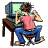

Imagen simple con <img>
El elemento <img> inserta una imagen en el documento. Los atributos src y alt son obligatorios.

Mapa de imagen con <map>
Un mapa de imagen permite definir áreas clicables sobre una imagen usando el elemento <map> y sus etiquetas <area>. Haz clic en el sol o en los planetas.